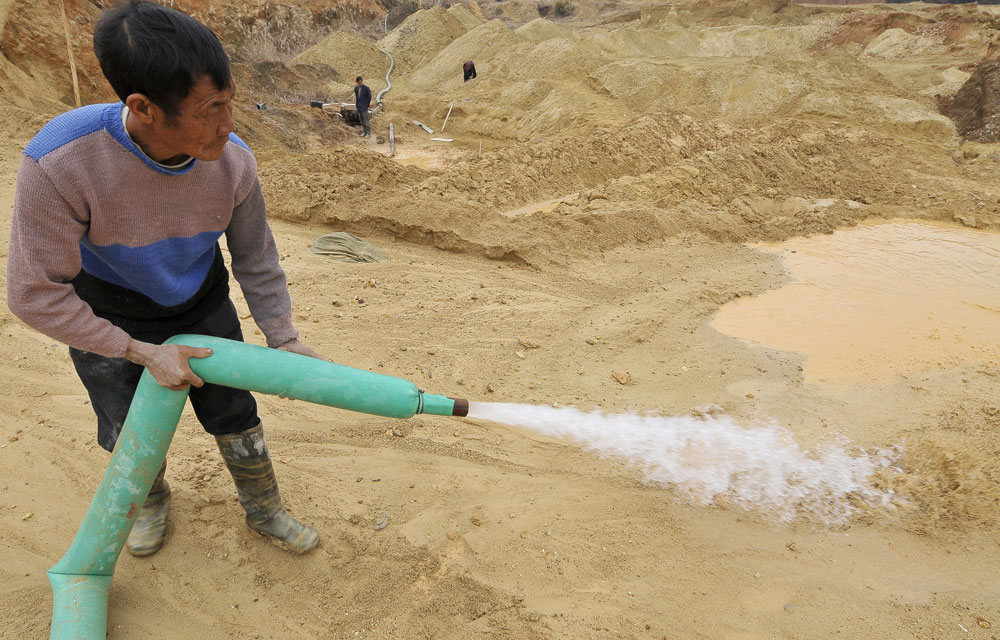

La Chine est devenue depuis quelques années un pays important dans la mondialisation. De par son rôle essentiel « d’atelier du monde » elle a su se faire une place de choix dans l’économie mondiale.
Le marché consacré aux terres rares serait égal à 6,5 milliards de dollars par an, soit 276 fois moins que celui du pétrole. Mais l’importance de ces composants n’en est pas moindre. En effet, il ne faut pas perdre de vue que les métaux rares sont présents dans la quasi-totalité de ce que nous consommons. De ce fait, cette industrie permet des retombées économiques très importantes surtout pour la Chine. Nous nous demandons alors comment la Chine est arrivée au stade de quasi-monopole de ce marché et dans quelle mesure elle assure ce rôle ?
La Chine a su profiter d’opportunités historiques et économiques pour se frayer un chemin sur le marché des métaux rares. La première, et celle sans laquelle la Chine n’aurait pas pu avoir la place qu’elle occupe aujourd’hui, est la désindustrialisation des pays occidentaux dans ce domaine.
En effet, plusieurs pays avaient des mines et les exploitaient afin d’extraire ces fameux métaux. C’est notamment le cas de la France et des États-Unis avec respectivement l’entreprise Rhône-Poulenc et la mine de Mountain Pass. Il est, ici, important de faire un point historique et d’expliquer en quoi ces deux industries ont été capitales dans la montée en puissance chinoise.
La société Rhône-Poulenc était leader de l’industrie chimique et pharmaceutique française dans les années 1960. Elle possédait environ 60 usines sur le territoire et étaient donc source de nombreux emplois. Dans les années 1980, l’entreprise purifiait 8 à 10 mille tonnes de terres rares par an, ce qui représentait environ 50% du marché mondial. Cependant, ces activités de purification nécessitaient de multiples traitements chimiques afin de libérer les métaux rares de matières superflues souvent radioactives. Les dépôts d’uranium avaient beau être revendus à EDF, la société a été accusée à de nombreuses reprises de rejeter dans la mer des produits extrêmement polluants et radioactifs. En 1994, il est alors décidé de ne plus traiter les matières radioactives et de sous-traiter. La société a donc demandé aux Norvégiens puis aux Indiens mais cela revenait trop cher. Le seul État capable de faire cette tâche très polluante et à moindre coût à l’époque était la Chine. Par pression médiatique notamment, le groupe a alors cédé la place importante qu’il avait sur le marché à l’empire du milieu.
Le cas américain est quasi similaire au cas français mais il ne réside pas dans le traitement des métaux rares mais plutôt dans leur extraction. La mine est située au Sud-Est de l’État de Californie, proche du désert de Mojave et à une heure à peine de Las Vegas. De 1965 à 1995, la mine de Mountain Pass a été le principal fournisseur mondial. Mais suite à de nombreuses tempêtes de sable pollué et des problèmes de nappes phréatiques contaminées, des décisions de justice ont accablé Molycorp, alors propriétaire de la mine. Cette dernière cessera toute activité en 2002. Elle n’a pas pu résister au dumping économique et environnemental chinois qui proposait, de ce fait, des prix imbattables.
Les pays occidentaux ont ainsi perdu progressivement des parts de marché ainsi que leur autonomie technologique. La Chine s’est alors emparée de ce marché lucratif.
Cette désindustrialisation a fait devenir les pays occidentaux dépendants des pays producteurs. La nouvelle stratégie économique est donc de ne plus avoir le fardeau environnemental d’une industrie polluante sur le territoire. La pollution est en quelque sorte délocalisée. Cela est alors bénéfique pour les deux parties. Les pays développés peuvent affirmer qu’ils ne polluent plus et qu’ils n’ont qu’à lier un simple partenariat économique avec la Chine pour avoir accès aux ressources dont ils ont besoin. Et le Chine se retrouve ainsi en position dominante sur le marché économique, bien que l’industrie des métaux rares soit une vraie plaie en termes écologique. Mais cela n’est qu’un détail.
L’occident se retrouve alors affaibli. Pour preuve, sur le seul marché des oxydes de terres rares, qui sont les poudres raffinées par l’entreprise Rhône-Poulenc, entre 1965 et aujourd’hui, une production équivalente à 4 milliards de dollars a été transférée en Chine. Si on parle maintenant de la production des aimants, qui nécessite beaucoup de terres rares, on parlerait de plus de 40 milliards de dollars perdus selon une étude allemande. Aux États-Unis, les trois quarts des producteurs d’aimants ont disparu.
Le modèle politique et économique chinois est réputé pour sa dureté et ses résultats plus que satisfaisants. À l’origine de cette croissance économique remarquable, il y a le président chinois Deng Xiaoping. Il a joué un rôle capital dans la montée en puissance de la Chine. En effet, après la mort de Mao Zedong en 1976, il y a eu une complète rupture entre les deux régimes. Les ambitions agricoles de Mao ne correspondaient pas à la vision de Xiaoping qui pensait que la force de production devait résider dans les sciences. Aujourd’hui c’est d’ailleurs ce qui fait la réputation de la Chine, devenue atelier du monde notamment sur le plan technologique.
ÈRE MAO ZEDONG
ÈRE DENG XIAOPING
Au niveau économique, la Chine est connue pour ses prix compétitifs tout au long de la production. La main d’œuvre est bon marché car la partie extraction et raffinage des métaux rares ne nécessitent pas de haut niveau de formation et donc de haut niveau de salaires. De plus, les mines se situent souvent dans les régions intérieures chinoises et sont, la plupart du temps, seules sources de revenus pour les habitants locaux. On peut noter également que le coût du capital est assez faible car il y a une politique de dévaluation du yuan. Du fait de la croissance des taxes douanières américaines sur les produits chinois, le gouvernement a décidé de dévaluer sa monnaie pour essayer d’atténuer ces effets. Cette politique est assez dangereuse car cela peut provoquer par exemple la fuite des investisseurs étrangers ne voulant pas s’installer dans un marché instable. La taille du marché chinois est aussi un argument important quand on parle de compétitivité. Cela permet, en l’occurrence, de faire d’importantes économies d’échelles.
La Chine a su mettre en avant ces trois avantages économiques pour attirer des entreprises étrangères et notamment faire des partenariats. Ces dernières délocalisent leurs outils de production pour profiter de la main-d’œuvre moins chère par exemple. En échange des avantages cités plus haut, les entreprises qui s’installent partagent leur savoir-faire et donc leurs brevets. Cela se nomme les joint ventures pour co-entreprises en français. Le gouvernement appelle cela de l’« innovation indigène » et a même expliqué le principe dans un document de politique industrielle officiel. Le principe est donc simple : il s’agit d’ajustements ou de modifications infimes de technologies déjà importées. Pour certains, cette technique est qualifiée de vol. Cette « innovation indigène » s’applique évidemment à l’industrie liée aux métaux rares. Plusieurs sociétés spécialisées dans les aimants de terres rares ont été la cible de ces agissements.
Voici d’ailleurs, la preuve en chiffre :
La Chine a multiplié ses demandes de brevets par 55 entre 2000 et 2018 et a, dans le même temps, dépassé ses concurrents directs : les États-Unis et le Japon.
De nombreux programmes politiques et économiques ont permis à la Chine d’avoir une place de choix dans la mondialisation. Dans les années 1980, le choix a été fait de miser un peu plus sur la recherche que sur la production en elle-même. Un vaste programme de recherche dans les hautes technologies a été lancé en 1986 et il est nommé le « programme 863 ». Il a pour but de développer et d’augmenter le niveau de la Chine dans sept domaines dont notamment la biologie, les technologies de l’information et de la communication, l’énergie et les matériaux. C’est avec ce programme que l’industrie s’est beaucoup développée. Plus récemment, un nouveau plan nommé symboliquement « Made in China 2025 » a permis de créer des dizaines de laboratoires et centres d’innovation industriels. Ces deux plans majeurs ont été possibles car les financements alloués ont été considérables : 400 milliards de dollars en 2016. C’est certes moins que les États-Unis mais plus que l’Europe ! De plus, le système des plans quinquennaux permet de définir des caps et objectifs à atteindre.
La Chine vise donc une autosuffisance technologique depuis presque 40 ans, en somme depuis que Deng Xiaoping est au pouvoir. Cette volonté est clairement affirmée par des plans politiques et économiques avec d’importants budgets. De plus, la Chine attire les industries étrangères à la recherche de coûts de production faibles et c’est de là qu’elle tire sa richesse.
Pour asseoir sa position sur le marché des métaux rares, la Chine détient une grande partie des réserves de ces matières si précieuses aux industries technologiques.
Sur cette carte, on peut voir que les gisements de terres sont répartis dans le monde entier mais on peut considérer que la plus grande concentration se trouve largement en Asie. En effet, la Chine regroupe beaucoup de mines mais il faut surtout noter qu’elles produisent énormément et permettent ainsi d’inonder le marché. Le pays compte dans ses rangs la plus importante mine du monde. C’est dans la ville de Boatou, en Mongolie intérieure, que sont extraites 80% des terres rares chinoises. C’est en réalité à 120 km au nord du centre urbain que se trouve la mine responsable de 70% de la production de terres rares au niveau mondial. La matière première est alors transférée dans les usines à la périphérie de la ville afin d’être raffinée. C’est précisément ici que se posent de multiples problèmes environnementaux. Comme en France avec la société Rhône-Poulenc et la mine de Mountain Pass aux États-Unis, la Chine doit faire beaucoup de concessions pour être leader. Elle détruit, pour cela, son environnement et pollue ses fleuves et ses terres fertiles. De nombreux cas de cancers ont d’ailleurs été détectés dans certaines villes minières. La Chine compte environ 10 000 mines d’extraction de métaux rares et autres minerais…
La Chine produit, certes, beaucoup de terres rares mais elle n’est pas seule détentrice de réserves. Comme le montre à la fois la carte et le graphique, d’autres pays ont des mines. C’est le cas du Vietnam. Cependant, il n’est leader dans aucune production de métaux rares. Il participe seulement à 11% dans la production d’antimoine, à 8% dans la production de caoutchouc naturel et à 19% dans la production de phosphore. Il ne pèse que peu de poids dans la production en elle-même mais se révèle d’une grande importance stratégique car il a de grandes réserves.
Mais ce qu’il faut retenir alors ici, c’est que la Chine a la plus grande réserve de terres rares.
Depuis plusieurs années maintenant, les green techs sont de plus en plus nombreuses dans notre quotidien. Ces nouvelles technologies dites plus « vertes » ont cependant besoin de grandes quantités de métaux rares. Le développement des voitures électriques et des technologies de l’information et de la communication a eu comme conséquences l’explosion de la consommation de métaux. D’après des études allemandes, la demande va exploser : celle du germanium va doubler, celle du palladium quintupler. De façon encore plus impressionnante, la demande du scandium va être multipliée par 9 et celle du cobalt, notamment nécessaire pour la fabrication de portables, d’ordinateurs ou de véhicules hybrides, multipliée par 24.
Les métaux rares permettent à la Chine d’acquérir une certaine forme de pouvoir. Ils lui accordent évidemment une place forte dans la mondialisation. L’empire du milieu, en captant cette industrie des métaux rares, a acquis par la même occasion des moyens de pression économique.
Le premier exemple est la guerre commerciale entre les États-Unis et la Chine. La rivalité dure maintenant depuis plusieurs années, notamment depuis 2014 où la Chine est devenue première puissance économique mondiale, dépassant ainsi les États-Unis. En 2010 déjà, Kathleen Dhalkemper alertait ses compatriotes de la chambre des représentants : « Les Chinois ont pris le contrôle du marché des terres rares, et nous, les États-Unis, sommes en train d’être dépassés ». Mais c’est surtout en 2018 que cette guerre économique a pris beaucoup d’ampleur. Les présidents américains Barack Obama et Donald Trump s’étaient déjà plaints des politiques déloyales et anticoncurrentielles chinoises. Mais ces plaintes n’ont rien donné. C’est pour cela que sous l’ère Donald Trump, les tensions se sont clairement matérialisées. Pour essayer de faire plier la puissance chinoise, l’ex président américain a utilisé le levier des taxes. Au début de l’année 2018, il a annoncé une taxe sur les importations d’acier et d’aluminium aux États-Unis. Or la Chine est la première exportatrice d’acier. Elle décide alors de répondre en taxant, elle aussi, des produits américains. Et cette guerre des taxes a duré plus de 6 mois. La Chine a fini par dévaluer sa propre monnaie pour rester compétitive dans tous les cas. Le yuan a alors atteint un de ses plus bas taux depuis la crise de 2018.
Les motivations de cette guerre commerciale résident principalement dans les valeurs des exportations de chaque pays. Donald Trump part du principe que les États-Unis sont perdants dans la balance économique des exportations. En effet, si on étudie les exportations des deux pays entre eux, on peut clairement voir que la Chine exporte environ 3 fois plus aux États-Unis que l’inverse. On parle ici de l’équivalent de 558 milliards de dollars de biens chinois exportés vers l’Amérique contre seulement 178 milliards de dollars de biens américains exportés en Chine. Du côté américain, la balance commerciale est alors clairement déficitaire et Trump estime, de ce fait, que la Chine triche pour rester compétitive. C’est pourquoi cette guerre commerciale, à coups de taxations diverses et variées et de dévaluation de monnaie, a eu lieu et continue encore aujourd’hui.
La Chine affirme sa supériorité encore une fois dans sa relation avec le Japon. Avec la crise diplomatique sino-japonaise concernant les îles Senkaku, la Chine continue d’utiliser les métaux rares comme moyen de pression. En effet, comme le montre la carte, la Chine exporte une très grande quantité de métaux rares vers le Japon et inversement, le Japon ne fait importer pratiquement que des métaux chinois. Cela pose donc une question de dépendance vis-à-vis, encore une fois, de la Chine.
Le conflit lié aux îles Senkaku ne concerne pas directement les métaux rares car il s’agit plutôt de problèmes d’appartenance territoriale et de ressources. Les îles ont toujours été convoitées par les deux pays depuis les années 1970 en raison des ressources en hydrocarbures notamment. Mais cet archipel inhabité représente également un moyen d’agrandir sa Zone Économique Exclusive (ZEE) et ainsi l’accès aux ressources halieutiques. La Chine convoite ses îles car elles sont un lieu de passage important pour le reste de l’Asie. Un des leviers, pour elle, est alors le commerce de métaux rares. En 2010, la chine a complètement stoppé ses exportations de ces composants vers le Japon pour faire pression.
Avec la mondialisation, la Chine a acquis une image d’atelier du monde où la main d’œuvre est peu chère et les coûts de production beaucoup plus bas que dans n’importe quel autre pays du monde. Mais elle a aussi la réputation d’un pays pollué et polluant et a à son palmarès une triste pole position : celle du premier pays émetteur de gaz à effet de serre au monde en 2015.
Malgré cela, l’empire du milieu a assis son pouvoir économique en investissant énormément dans les green techs ce qui lui a permis de redorer son image de méga-pollueur. Le modèle économique chinois est alors devenu un exemple à suivre pour de nombreux pays émergents notamment en Afrique. C’est ce qu’on appelle le Consensus de Pékin. Cela regroupe des concepts clés qui ont permis à la Chine d’en arriver là où elle est aujourd’hui.
L’ambition de la Chine est clairement énoncée par ses représentants :
Vivian Wu
1er producteur d’énergies vertes,
1er fabricant d’équipements PV,
1ère puissance hydroélectrique,
1er investisseur dans l’éolien,
1er marché mondial des voitures à nouvelles énergies.
Nous sommes à présent en droit de nous demander quel sera l’avenir de la Chine dans le domaine des métaux rares. En effet, le monopole chinois est avéré par des faits et surtout par des chiffres. Mais cette situation peut provoquer des tensions commerciales comme avec les États-Unis mais également géopolitiques avec le Japon par exemple. La dépendance du reste du monde envers la Chine pourra-t-elle continuer ?
Dans la troisième et dernière partie, nous verrons que le bloc occidental est en recherche d’autres solutions afin de diminuer sa dépendance au marché chinois. Ces solutions peuvent être notamment la réouverture de certaines mines ou même la recherche sur les techniques de recyclage de ces métaux. La Chine doit faire face également à un manque de chercheurs ou de « cerveaux » pour parler plus largement. Le rapport nombre de chercheurs – population est bien plus faible qu’en France par exemple. Plusieurs experts font aussi référence à la nécessité de la Chine à devoir faire des réformes structurelles et surtout à changer sa nature dirigiste qui pourrait empêcher la créativité.
Une conscience écologique est en train de prendre racine au sein de la population chinoise. De nombreuses protestations ont lieu contre le modèle de croissance chinois. Ne sont-elles pas d’ailleurs légitimes au regard de toute la pollution provoquée uniquement par l’industrie des métaux rares ? Peut-alors parler de greenwashing ?
La Chine essaie cependant de réduire sa production de pollution en important des métaux rares comme le montre ce graphique déjà vu dans la première partie. En regardant également la source de ces importations avec la carte de flux plus haut, on remarque que la Chine se fournit au Japon, aux États-Unis et dans une moindre mesure au Vietnam.
Malgré tous ces « points faibles », la Chine tient son monopole. Le marché des métaux rares est un fleuron pour l’économie chinoise. Ainsi, l’empire du milieu se battra pour garder sa place si durement gagnée, malheureusement au prix de son environnement.
created with
Website Builder .